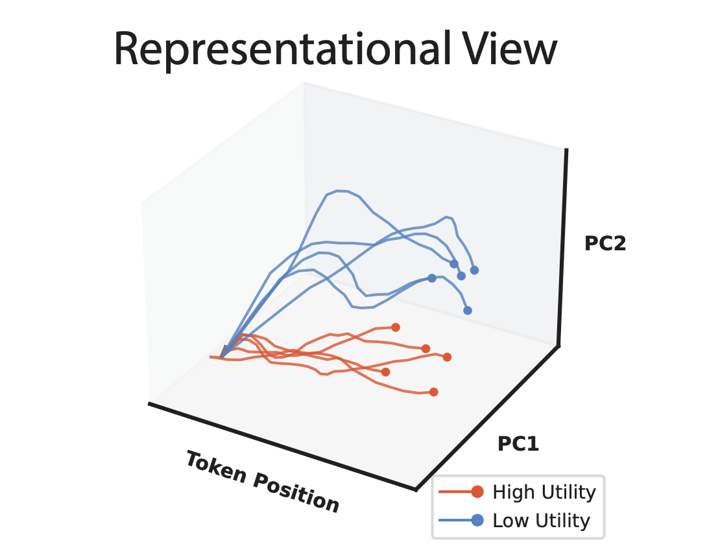
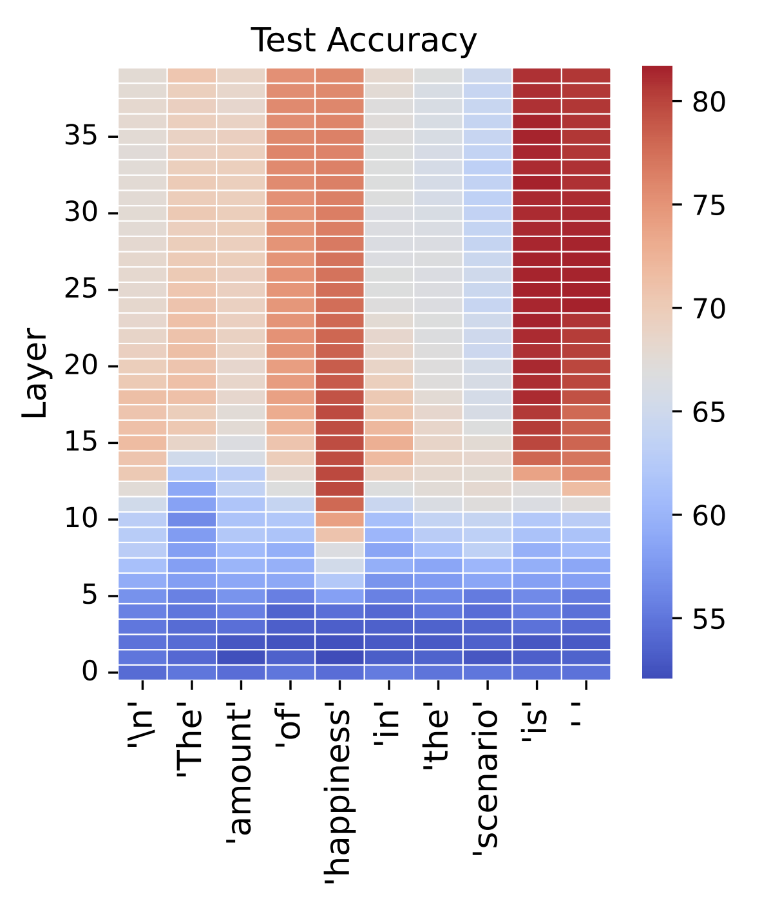
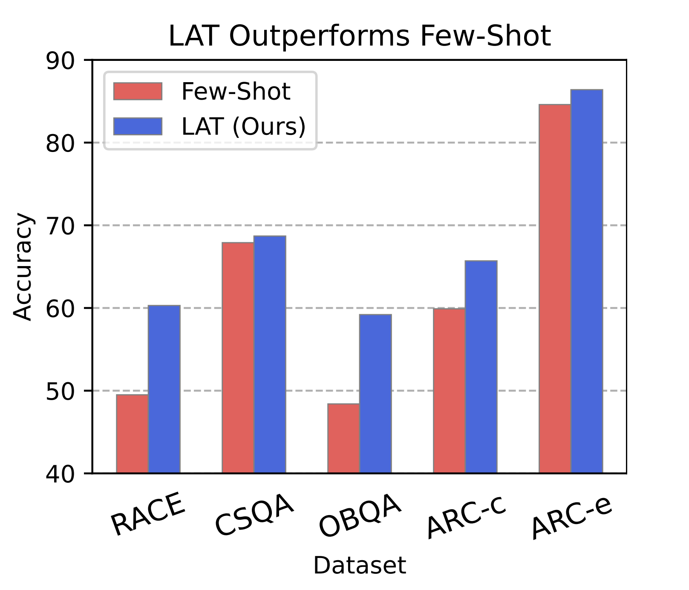

"Representation Engineering: A Top-down Approach to AI Transparency" is a well-known and important work in AIS. Motivated by the increasing capability and deployment of deep neural networks, the authors aim to address the concerning black-box nature of powerful AI systems. This summary provides a digestible though thorough overview of the work, both as an exercise for me to strengthen my understanding and as a resource for those with less experience, time, or interest (it is a pretty long paper).
Core idea
Representation engineering (RepE) proposes representations as the primary unit of study for neural network internals rather than neurons and circuits, as is the case in mechanistic interpretability. RepE takes a top-down, rather than bottom-up, approach to achieving transparency in LLMs. In line with the arguments of P. W. Anderson's famous essay "More is Different," RepE argues that a first-principle derivation of LLM explainability may well be impossible and at the least may miss sufficiently high-level abstractions and patterns within a network. Let's look at the work.
Initial Overview
I think this graphic is helpful for understanding the crux of the paper:
Here we see the so-called "neural trajectories" of a given language model when processing two different texts: one with low utility (blue) and one with high utility (red). The important thing to note here is that, in representation space, there seems to be some consistent gap between low and high utility trajectories (in fact, they are linearly separable).
The details of what these trajectories actually are and where the heck these principal components are coming from will be discussed later. But for now, it should feel important that we can find some relation between a model's internal state and the utility of a text. In an application where our utility is truthfulness, the ability for us to measure and/or influence the utility of the model's output is clearly beneficial.
... Then What Is a Representation?
The simplest answer is: a vector of neuron activations taken from a specific layer (in a transformer-based decoder model) at a specific token position. This may not seem immediately interesting per se. The value of the representation framework therefore is the newfound layer of semanticity over activation vectors achieved by conceptualizing them as directions in high-dimensional space corresponding to abstract concepts (or functions).
This may bring to mind familiar intuitions for word embeddings. And it is in fact similar. A now-classic example of this "semantic arithmetic" is that:
king - man + woman ≈ queen
in word embedding space. (As an aside, if you have ever played Little Alchemy, then you already understand the point being made here). The key difference is that representations exist at a much higher level of abstraction, encoding concepts like honesty and functions like power-seeking within the intermediate hidden states of a neural network, rather than single words (tokens) at the input layer.
... Then What Is Representation Engineering?
RepE is really the aggregation of two operations over representations: reading and control.
This decomposition should feel fairly intuitive. Recall that our end goal is to obtain a sufficient level of understanding of neural networks such that we can monitor and take methodical interventions upon them to improve their safety. And RepE aims to achieve this by viewing the hidden states of neural networks as representations, and then studying these objects. Therefore it follows that, to intervene at the representation level, we must (1) be able to observe and describe a neural network's behavior in terms of its representations and (2) make subsequent, thoughtful edits to its representations in order to achieve a desired delta in the network's behavior.
Representation Reading
The paper's approach to reading representations is the true technical novelty of the work. It is presented in 3 steps and given the overarching title Linear Artificial Tomography (LAT). Below is a detailed yet summarized discussion of the process. As an overview, LAT boils down to providing a network with structured stimulus so as to elicit representations of a desired utility (e.g. honesty), observing these representations, then using this information to identify a direction in representation space that corresponds to the utility.
1. Designing Stimulus and Task
For the purposes of this summary, we can think of step (1) as architecting a certain structure of prompt that empirically works well for coercing a model into "thinking" about the utility. The stimulus is discussed in much greater detail in the paper.
2. Collecting Neural Activity
Then, in step (2), now that the model is properly stimulated, we can simply extract the vector of activations at each layer for each token position. Unsurprisingly, representations evolve as they pass through the network and through the tokens, i.e. not every layer nor every token position is equally well-suited to provide us with a meaningful representation of the desired utility.
For any given token position, later hidden layers are more conducive to supplying representations than earlier layers. This is sensible as, roughly speaking, successive layers within a model correspond to increasingly abstract notions as the combinatorial space expands. We see in the figure below that representations at later layers are significantly better at predicting the amount of utility in a text.
Additionally, certain tokens are more evocative of the utility representation than others. In general, tokens directly related to the utility (e.g. "truth" for the utility "truth-ful-ness") exhibit representations (at later layers) that more accurately predict the utility value of a text prompt. For decoder models (like LLMs), the last token(s) in a prompt (e.g. the token "is" in "the amount of happiness in the text prompt is") are also strong predictors as the model is at this point preparing to generate the next semantically related token.
3. Constructing a Linear Model
It is at this stage that we leverage the above information to make useful predictions. The goal here is to identify as accurately as possible the direction in representation space of the utility. Since we are aiming to create a linear model, there are many different ways to approach the problem. Here, we will discuss using PCA (which is the main focus of the paper).
The naive approach would be to apply PCA directly to the set of well-predicting representations acquired in step (2). However, these representations nonetheless embed some irrelevant information related to the text. For example, in the sentence "I am unhappy with the weather today," the representation at layer 30 for token position "today" will be non-negligibly impacted by non-utility factors like sentence structure and the fact that the sentence is about the weather.
To address this, the authors first generate a set of difference vectors by extracting representations obtained from sentence pairs that differ only in their expression of the utility: "I am unhappy with the weather today" and "I am happy with the weather today." The difference vector of these two prompts will therefore point in a direction of low utility to high utility, the irrelevant shared traits of the sentences having been canceled out.
Applying PCA to this denoised set now yields a very powerful dimensional reduction, where axis PC1 should be highly similar to the ground truth representation vector (which we cannot access a priori). The paper refers to PC1 as the "reading vector."
With a utility representation vector u, we can now take the dot product of u with the current internal activation state x, given by uTx, in order to measure the extent to which x points in the direction of u. In other words, we can now effectively measure the utility (e.g. "honesty") of a model's internal activation state. One final important note here is that this measurement is entirely* unsupervised—we don't need to know anything about the class of the datum to measure the honesty of a model's output.
*A small handful of labeled examples are required to determine the sign of the representation axis, i.e. to know whether it points in the direction of high or low utility.
Representation Control
Representation control refers to our ability to intervene with the internal state of a model in order to achieve some desired change in behavior, like making it more honest. This necessarily builds on the tooling developed in representation reading. The paper investigates many different ways to achieve control. I will discuss the method which follows most straightforwardly from the above work, as well as a simple improvement.
The first control method is to perform activation steering using our reading vector. If we forcefully add (or subtract) our reading vector to the activations of a model, we should expect to observe a corresponding semantic shift in the model's output (which we do). For example, I may use LAT to calculate my reading vector, where honesty is my utility. Then, I can add my reading vector to the internal activation state of my model in order to "steer" its output to be more honest.
The paper identifies a problem with this approach: deterministically using the same reading vector shifts all prompts in the same direction, possibly resulting in less meticulous control than if we were to exploit the structure of each individual prompt. A better steering device, the paper shows, is to use a contrast vector. This contrast vector is very similar to the difference vector used in step (3) of representation reading. Here, for any given prompt, two contrastive hidden prompts are generated, one eliciting high utility behavior and the other low utility. Again, the difference in representation is taken, and the resultant vector proves to be a much stronger intervention method than the reading vector.
There is a clear computational overhead to the contrast vector approach. In fact, for every prompt provided to the model, two more bespoke prompts are generated, processed, and from which representations are extracted. This roughly triples the cost of inference. The reading vector, however, is calculated offline and can be applied blindly to all prompts. In this way, the reading vector serves as a low-cost, all-purpose approach to control via steering while the contrast vector is a more precise, powerful, and costly, intervention.
Results
In short, RepE is effective. The paper provides a couple case studies and plenty of analysis. For this summary, I will simply relay that the authors were able to improve upon the baseline performance of LLaMA-2 models on a difficult multiple choice section of TruthfulQA using LAT.
The baseline score comes from the model outputting which option it believes is correct. The authors achieve higher accuracy by instead selecting the option which elicits an internal representation most similar in direction to the "truthfulness" reading vector (computed ahead of time using various stimuli).
Notably, this suggests that the internal state of an LLM does not always align with its output and that representation reading may therefore be more effective than reading model output (at least on tasks regarding truthfulness).
One key limitation
From my perspective, the most severe limitation of this work is in the distinction between representations capturing association vs. intent. The authors briefly touch on this in section 5.2.2, where they describe that: "the immorality indicator also illuminates in benign outputs over the tokens 'use the gun.'" This is a rather profound observation, suggesting that representations may only track common semantic associations rather than truly measuring a model's intent, a conclusion that would severely weaken the theoretical and practical reach of representation engineering.
Closing thoughts
Representation engineering is a powerful approach to achieving internal transparency in LLMs. Through representation reading and control, the authors provide new and empirically effective techniques for observing the internal state of a model and reliably intervening. RepE rethinks mechanistic interpretability's bottom-up approach to explainability, pointing out that a top-down strategy may be necessary to identify sufficiently abstract patterns in neural networks. Importantly, however, the authors do not view RepE and MI as mutually exclusive, but they suggest that building a "staircase" between the two frameworks may be most effective for future work in transparency.